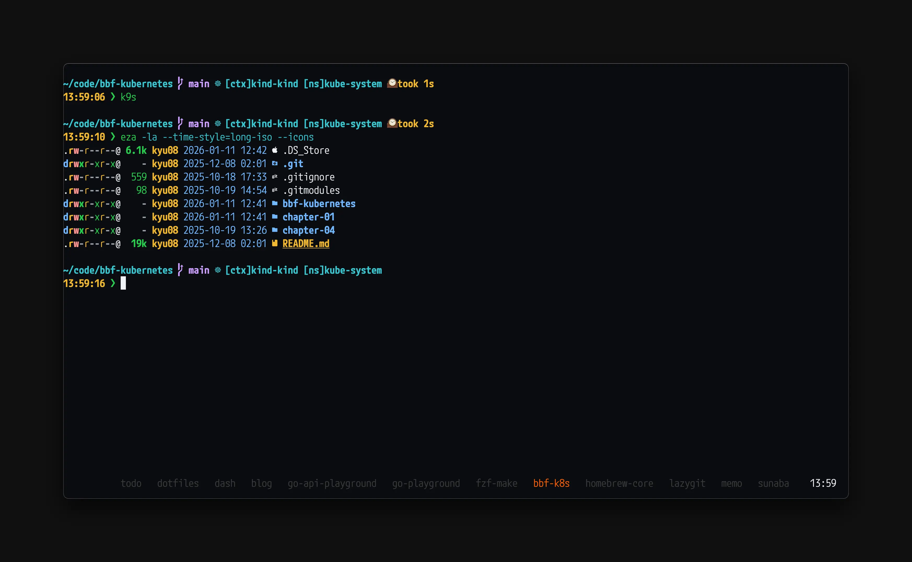
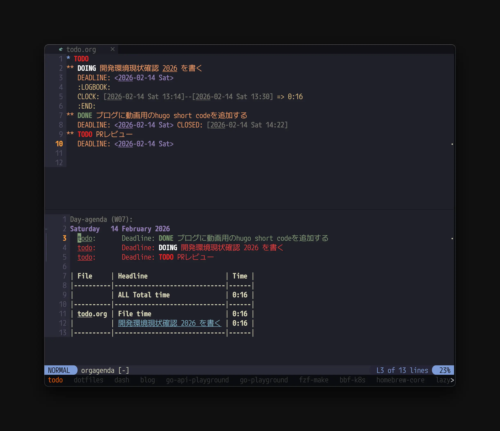
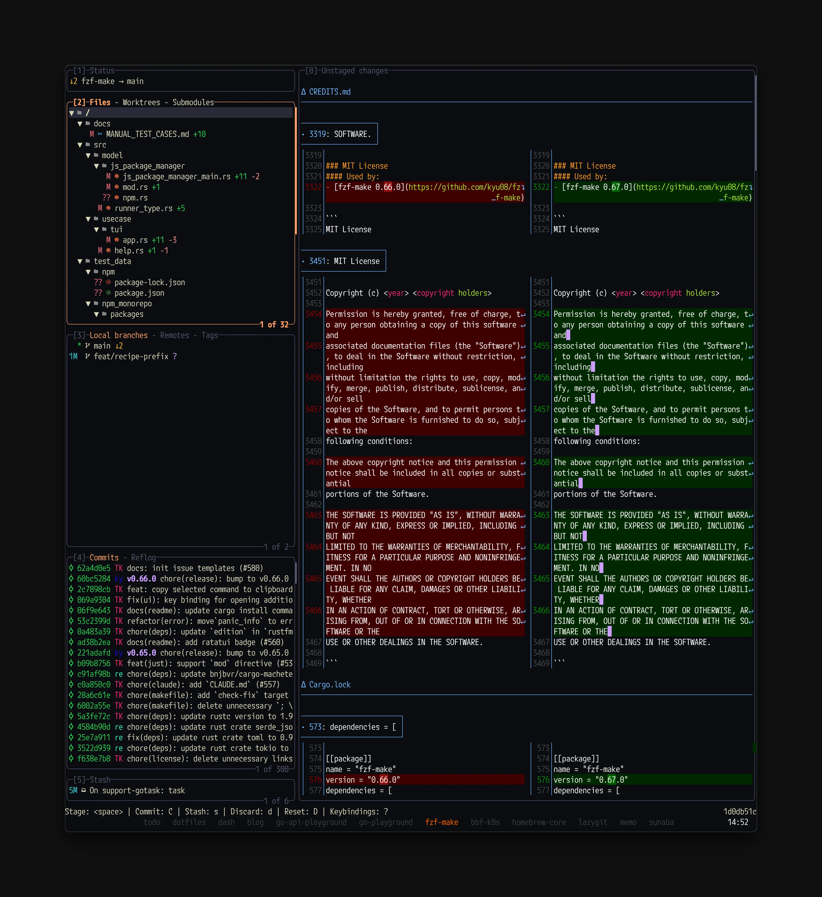
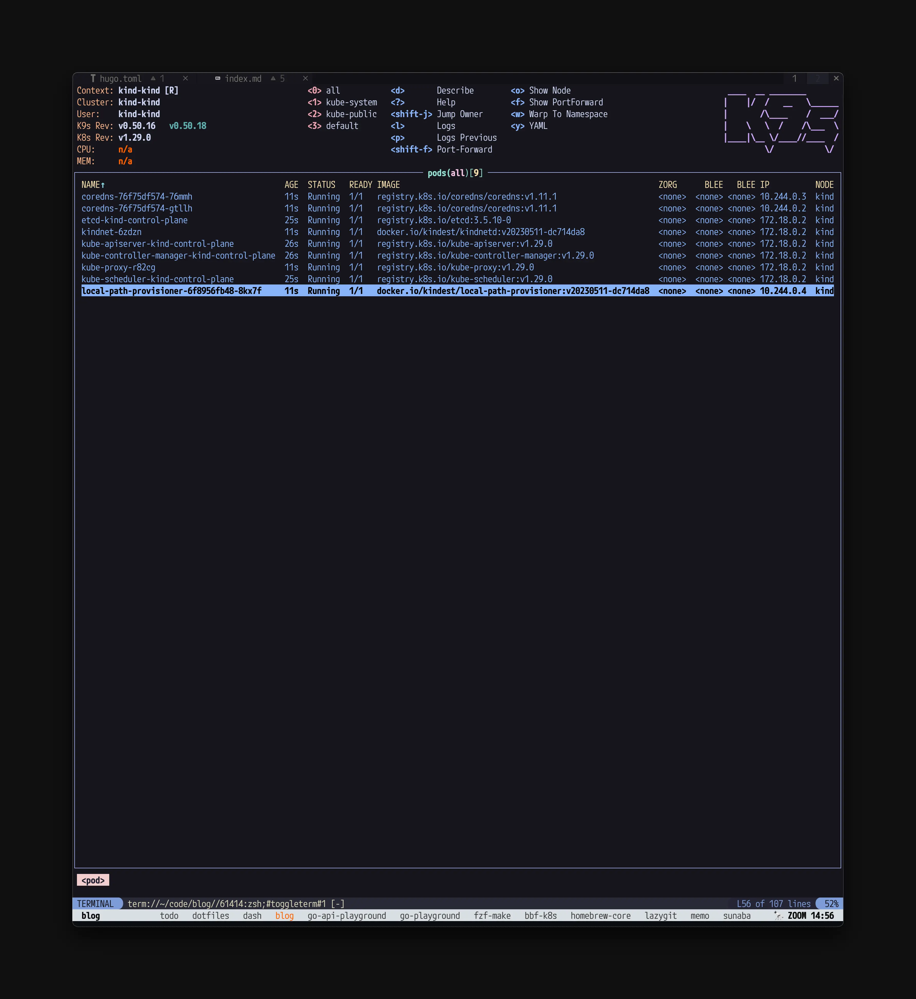
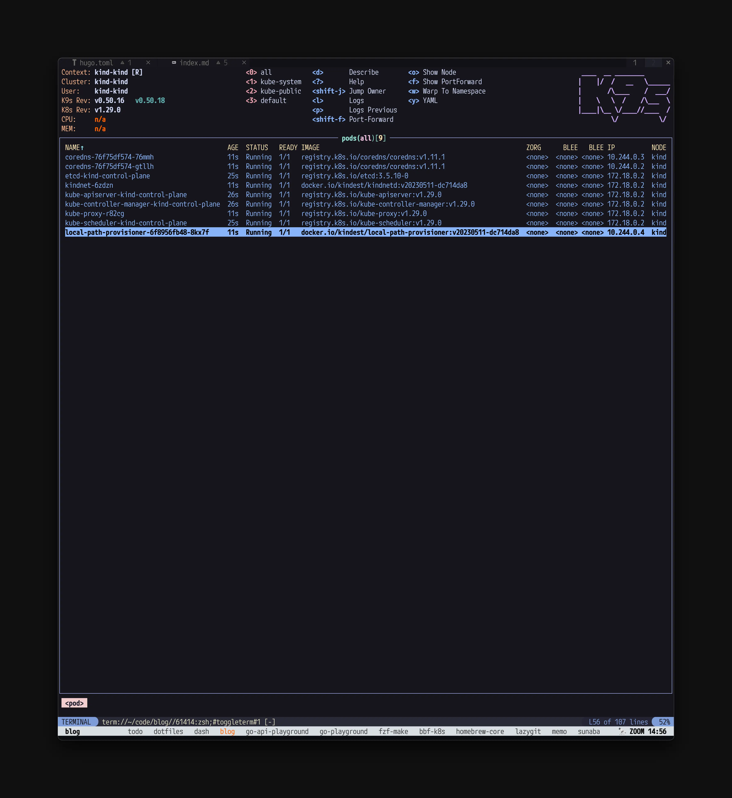

開発環境現状確認 2026

2026年年始に複数の方（や会社）が開発環境について書いていたので2026年時点のスナップショットも兼ねて自分も流行りに乗って書いてみる。
1それではやっていきます。
OS#
大学生くらいからmacOSを使っている。あまり不満がなくて好き。（仕事用端末もmacOS）
唯一あるとしたらゲームがあんまりできないのでこれがちょっとだけ気になっている。
5年くらい前に買ったM1 MacBook Air(16GB RAM)の物持ちが良すぎて新しいMacを買うタイミングがなかなか来ない。新しいMacを買うのは楽しいので買いたい気持ちもありつついかんせん困ってないのでなあ…の気持ち。
エディタ#
（就職した）2021年くらいからNeovimを使っている。厳密には2022年ごろまではJetBrains系のエディタと併用していたが、そこからはNeovimのみを使っている。
キーボードだけで操作しやすいのと起動が早いのとカスタマイズしやすいのが好きでつかっている。（もちろんvimの操作性も気に入っている）
AI時代になって設定を自分好みにするコストが格段に減ったのでNeovimのカスタマイズが捗っており嬉しい。（luaの書き方を覚える前にAI時代が来てしまった…）
久々に測ってみたら起動時間が60msくらいになっていたので気が向いたらもうちょっとチューニングしてもいいかもしれない。
AIツール#
ClaudeとDevin、GitHub Copilotを使っている。
ClaudeはDesktop App経由で壁打ちや検索用途で使ったり、Claude Codeでコードを書いてもらったりしている。
Claude Codeを使うときはNeovim plugin等ではなくtmuxのpaneを切ってそこで直接動かしている。
Devinは主にAsk Devinを使ってコードベースの調査などに使っている。レスポンスがめっちゃ早くてありがたい。
GitHub Copilotはエディタのインライン補完で使ったり、GitHubのWebUI上でタスクを依頼したりするときに使っている。特にこのブログの機能開発ではよく使っている。（issueさえ書けばそのままWebUIからタスクを依頼できるのが便利）
ターミナルエミュレータ#
Alacrittyを使っている。ターミナルにはタブ機能がない方がcmd+wで誤爆したりとかが起きないので好きで使っている。正直早いかどうかはあまりわかってないが特に不満もない。（少し前に日本語入力もいい感じになったし）
ターミナルマルチプレクサ#
tmuxを使っている。1セッションに好きなだけウィンドウを開く運用で使っている。
tmux-fzfでのwindow切り替えが便利すぎる。
設定手順は過去にこちらに書いた。
前述の通りalacrittyとの相性がいい感じなのでよほどのことがない限りこの組み合わせは変えなさそう。2
Status Lineはこんな感じにしている。

詳しくは後述するが、nvim-orgmode/orgmodeでClock In(時間計測)しているタスクがあるときはそのタスク名と経過時間をStatus Lineに表示するようにしている。

その他のtmuxの設定とか工夫を紹介する記事は別で書きたい。
Zellijも試したことはあるが、自分の環境だとなぜか表示が崩れてしまうので使っていない。
シェル#
zshを使っている。
元々はネットに落ちているshellのコードが（fishよりも）動きやすいから、という理由で使っていたのを惰性で使い続けている。
少し前にこの記事を参考にして起動を高速化したりした。（最近は測ってないが多分今も数10msくらいで起動するはず）
2024/4頃からzeno.zshを使っていてかなりよく使うコマンドの入力が効率化できた。snippetがいい感じに展開されるのは言わずもがな嬉しいが、zeno-insert-snippetでzenoに登録したsnippetをfzfで選択&挿入できるのがとても便利。設定ファイルはまだyaml形式で書いている。
プロンプト表示にはstarshipを使っている。
こんな感じでk8sのcontextとnamespaceを表示するようにしている。

誤ってprod環境を壊すことがないようにこんな感じでcontextにprodという文字列が含まれていたら目立つようにしている。

設定はこんな感じ。
[kubernetes]
format = '[[$symbol]($style)\[ctx\]$context \[ns\]$namespace]($style) '
disabled = false
contexts = [
{ context_pattern = ".*dev.*", style = "blue", symbol = " " },
{ context_pattern = ".*prod.*", style = "bold red", symbol = "🔥 " },
]
その他の設定とか便利スクリプトを紹介する記事は別で書きたい。
ランチャー#
AlfredとRaycastを併用している。
基本的に不満がないかつ操作性がRaycastよりも好みなので基本的にはAlfredを使っている。
使い道は至って普通でスニペットやweb検索、ローカルのファイル検索などに使っている。
あとはWorkflowを利用してよく使うアプリを以下のようなキーバインドで呼び出せるように設定している。
- Alacritty:
opt + space - Brave:
cmd + esc - Slack:
opt + opt - Notion:
opt + n - Claude:
opt + x - TickTick:
opt + t - Spotify:
ctrl + esc
今は治ってるかもしれないが、一時期Alfredのクリップボードの動作がとてつもなく重くなってしまったのでそこだけRaycastを使っている。
ウィンドウマネージャー#
yabaiとskhdを使っている。設定をコード管理できるのが嬉しい。たまに動作が不安定になるのでそのたびにyabai --restart-service && skhd --restart-serviceを実行している。とはいえ特に不満もない。
めっちゃ雑に書くとよく使うのはこの辺のやつ。
- windowを右半分に表示
- windowを左半分に表示
- windowを左上に表示
- windowを左下に表示
- windowを右3/4に表示
- windowを左1/4に表示
フォント#
M+1Code Nerd Font Monoを使っている。まるっとしていて好き。nerd fontも入っているのでNeovimを使っていても豆腐が出ず嬉しい。（あまり原理はわかってないがCicaなどの他のnerd font対応フォントよりも豆腐が出なくてありがたい）
タスク管理#
ここ1年くらいはnvim-orgmode/orgmodeを使っている。emacsのorg-modeライクな機能をNeovimで使えるようにしたプラグイン。
少し前まで素朴にこんな感じのファイルを毎日生成して管理していたが、期日が違うタスクをいい感じに管理したくて使い出した。
## TODO
- 実装
## DONE
- コードレビュー
Neovimでタスク管理できるのとタスクに優先度、期日を設定してそれをいい感じにソートして表示してくれるのがかなり肌にあっていて気に入っている。

最近は時間の使い方を振り返る目的でClock In的な機能を使ってタスクごとの所要時間も管理してみている。
これに関してはそのうち別の記事として詳しく書きたい。
ブラウザ#
数年前からBraveを使っている。広告をブロックしてくれつつChrome拡張も使えるので便利。一時期Arcも使っていたが肌に合わない挙動があったので使うのをやめてしまった。（具体的には覚えていない）
よく使うChrome拡張は少し前にこの記事に書いた。
IME#
Google日本語入力を使っている。
たまーにひらがなの変換がおかしいのが気になっているが全体的には割と満足している。
azookeyも試したが辞書登録した単語の優先度が低いのが使いづらくて使うのをやめてしまった。（ライブ変換はとても便利だった。）
ならissueを立てようよ…という話ではあるがちょっとこのところ忙しくそこまではできていない。
CLI/TUIツール#
よく使っているCLI/TUIツールはこのあたり。
- fzf
- ディレクトリ履歴移動やファイル検索などあらゆるスクリプトで使っている。
- lazygit
- gitの操作はすべてlazygitでやっている。 
- add commit push pullなどの日常の操作やブランチ操作などをかなり少ないキー入力で行えるのがとても便利。
git rebase -i相当のことができたり、commitの一部だけstagingに戻したりと細かいこともできる。- ここ2年くらいで細々とPRを送っており、去年末頃に9番目にcommitが多い人になれた。

- k9s
- GKEのリソースを見たり操作したりするときに使っている。とても便利。


- ログはあまり使いこなせてないのでDatadogやCloud Loggingを見ていることが多い。
- GKEのリソースを見たり操作したりするときに使っている。とても便利。

<PRここから>
fzf-makeというmake targetやpnpm script, yarn script, npm script, just recipe, taskfileに定義されたtaskをfuzzy finder形式で選択、実行できるTUIを開発しています。

コマンド名やその内容を覚えずとも楽に実行できたり、履歴機能があるのが特徴です。
次のようなコマンドでインストールできるのでぜひ使ってみてください。
brew install fzf-make
cargo +1.90.0 install --locked fzf-make
スターもしてもらえると嬉しいです🙏
</PRここまで>
キーリマッパー#
Karabiner-Elementsを使っています。
vimmerなのでAの左側のキーを
- 単押しでesc
- 長押しでctrl
となるように設定している。
あとはよくある左cmdを英数、右cmdをかなにリマップする設定とか、ctrl+shift+hjklで←↓↑→が入力する設定とかを入れている。
キーボード#
- 7sPro

- 2021/8から使っている。今は家でメインのキーボードとして使っている。
- キースイッチはYushakobo Fairy Silent Linear Switchを使用。
- EPOMAKER SPLIT70
- 2026/1に買って職場で使っている。分割キーボードかつガスケットマウントでとても打鍵感が良い。
- キースイッチは同じくYushakobo Fairy Silent Linear Switchを使用。
その他#
- fuwari
- スクリーンショットを付箋のように画面上に貼り付けておけるmacアプリ。ちょっとメモとしてみたいときにとても便利
- こんな感じで動く